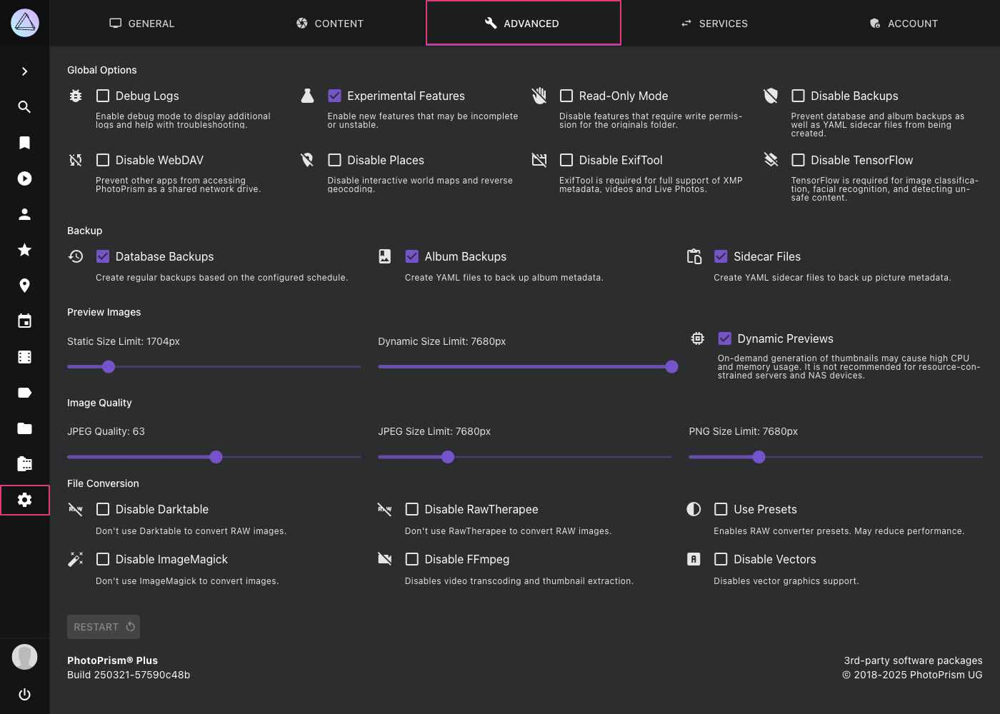
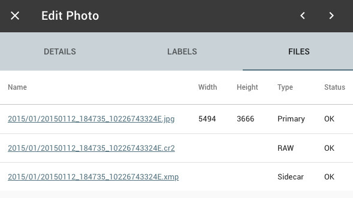

Advanced Settings¶
System config options such as the image quality can be changed on the advanced settings page. You can also disable specific features and enable the debug or read-only mode.
Since they are not safe to use without authentication, these settings are not available when running in public mode. Changing config options is still possible via configuration files and with command parameters.
Changing advanced settings always requires a restart to take effect. Selecting a different thumbnail quality or size won't replace existing thumbnails. You can regenerate them using the command-line interface.

All config options can be set in your compose.yaml or docker-compose.yml or
via command-line parameters as well. Manually changed values are saved in a config file. It is stored in
the storage/config folder by default.
Global Options¶
Debug Logs¶
When enabled, debug logs are shown in Library>Logs. Requires restart.
The corresponding config toggle is PHOTOPRISM_DEBUG.
Experimental Features¶
When enabled, your instance will be updated with experimental features.
The corresponding config toggle is PHOTOPRISM_EXPERIMENTAL.
Read-only Mode¶
When enabled, importing, uploading and deleting files is not possible.
The corresponding config toggle is PHOTOPRISM_READONLY.
Disable Backups¶
This option prevents the creation of database, album and YAML sidecar file backups.
The corresponding config toggle is PHOTOPRISM_DISABLE_BACKUPS.
Disable WebDAV¶
This option prevents building WebDav connections. Requires restart for changes to be applied.
The corresponding config toggle is PHOTOPRISM_DISABLE_WEBDAV.
Disable Places¶
When selected, geo-information (latitude, longitude) will still be read (and indexed) from your files metadata, however PhotoPrism will not use reverse lookup to determine place names using those coordinates as it normally would.
The Places section will not be visible.
The corresponding config toggle is PHOTOPRISM_DISABLE_PLACES.
Disable ExifTool¶
This option prevents the creation of json files with Exif data in storage/sidecar.
Note that you must have ExifTool enabled to extract video metadata such as duration, resolution, and codec.
The corresponding config toggle is PHOTOPRISM_DISABLE_EXIFTOOL.
Disable TensorFlow¶
When selected, image classification and facial recognition will be disabled as both rely on tensorflow.
The corresponding config toggle is PHOTOPRISM_DISABLE_TENSORFLOW.
Backups¶
Database Backups¶
When selected, database backups are created based on the configured schedule.
The corresponding config toggle is PHOTOPRISM_BACKUP_DATABASE.
The schedule as well as the number of backups that will be retained can be configured with PHOTOPRISM_BACKUP_SCHEDULE and PHOTOPRISM_BACKUP_RETAIN.
Album Backups¶
When selected, YAML files that back up album metadata will be created based on the configured schedule.
The corresponding config toggle is PHOTOPRISM_BACKUP_ALBUMS.
The backup schedule can be configured with PHOTOPRISM_BACKUP_SCHEDULE.
Sidecar Files¶
When selected, YAML files that back up picture metadata will be created.
The corresponding config toggle is PHOTOPRISM_SIDECAR_YAML.
Preview Images¶
This section controls how JPEG preview and thumbnail images are rendered. These are high-quality, scaled-down versions of your originals.
Thumbnails are necessary because web browsers are bad at resizing large images to fit the screen. Using full-resolution originals for slideshows and in search results would also consume a lot of browser memory and significantly reduce indexing performance.
Downscaling Filter¶
This lets you select the algorithm used to resize your original images when creating thumbnails. A detailed description of the available filters can be found in the section below.
For a good trade-off between quality and performance, we recommend choosing the lanczos filter. It may be a little slower in creating thumbnails, but produces very high quality images. In comparison, the less sophisticated cubic filter may be 30% faster.
The corresponding config option is PHOTOPRISM_THUMB_FILTER.
This option is only available if the native imaging image processing library has been enabled by setting PHOTOPRISM_THUMB_LIBRARY to “imaging†in your compose.yaml or docker-compose.yml configuration file.
Static and Dynamic Size Limits¶
Static Size Limit: During initial indexing or import (as thumbnails are generated),
no thumbnails will be created above this size.
The corresponding config option is PHOTOPRISM_THUMB_SIZE.
Dynamic Size Limit: During dynamic (on-demand) thumbnail generation,
no thumbnails will be created above this size.
The corresponding config option is PHOTOPRISM_THUMB_SIZE_UNCACHED.
Reducing the Static Size Limit of thumbnails has a significant impact on face recognition and image classification results. Simply put, it means that the indexer can no longer see properly.
If the configured size limit is exceeded (for example, if users have a larger screen), a sufficiently large thumbnail can't be created, and the photo viewer may be forced to display the original image instead. Downscaling images in browsers typically results in poor quality, and they may also be displayed in the wrong orientation.
The smallest configurable size is 720px for consumption by the indexer to perform color detection, face detection, and image classification. Recreating them every time they are needed is too demanding for even the most powerful servers. Unless you only have a few small images, it would render the app unusable.
It is recommended that you set these limits high so that browsing pictures is as smooth as possible. However, if the amount of disk storage required is a serious problem, and you are willing to increase server load instead, it is possible to set the Static Size Limit to the minimum of 720px in combination with a higher Dynamic Size Limit. This allows the server to generate larger thumbnails on demand. It may also result in a noticeable delay when viewing pictures in full-screen mode.
To view original images, enable Dynamic Previews, and configure Dynamic Size Limit and Static Size Limit to a small value like 720. When viewing images exceeding that limit, the original files will be displayed.
Which thumbnails will be generated?¶
The smallest configurable static and dynamic size limit is 720px, so most sizes up to fit_720 are always generated by default.
Higher size limits generate thumbnails with more detail at higher resolutions - either statically (pre-generated while indexing) or on demand if the configuration permits.
Optional thumbnail sizes cannot be pre-generated and are only rendered on request, for example when sharing an image on Instagram.
The following overview shows the name, dimensions, and aspect ratio for each thumbnail size as well as a description of how it is used:
| Name | Width | Height | Aspect Ratio | Available | Usage |
|---|---|---|---|---|---|
| colors | 3 | 3 | 1:1 | Always | Color Detection |
| tile_50 | 50 | 50 | 1:1 | Always | List View |
| tile_100 | 100 | 100 | 1:1 | Always | Places View |
| left_224 | 224 | 224 | 1:1 | On-Demand | AI |
| right_224 | 224 | 224 | 1:1 | On-Demand | AI |
| tile_224 | 224 | 224 | 1:1 | Always | AI, Mosaic View |
| left_384 | 384 | 384 | 1:1 | Optional | AI |
| right_384 | 384 | 384 | 1:1 | Optional | AI |
| tile_384 | 384 | 384 | 1:1 | Optional | AI |
| left_480 | 480 | 480 | 1:1 | Optional | AI |
| right_480 | 480 | 480 | 1:1 | Optional | AI |
| tile_480 | 480 | 480 | 1:1 | Optional | AI |
| tile_500 | 500 | 500 | 1:1 | Always | Cards View |
| fit_720 | 720 | 720 | Preserved | Always | SD TV, Mobile |
| tile_1080 | 1080 | 1080 | 1:1 | Optional | |
| fit_1280 | 1280 | 1024 | Preserved | On-Demand | HD TV, SXGA |
| fit_1600 | 1600 | 900 | Preserved | Optional | Social Media |
| fit_1920 | 1920 | 1200 | Preserved | On-Demand | Full HD |
| fit_2048 | 2048 | 2048 | Preserved | Optional | DCI 2K, Tablets |
| fit_2560 | 2560 | 1600 | Preserved | On-Demand | Quad HD |
| fit_3840 | 3840 | 2400 | Preserved | Optional | 4K Ultra HD |
| fit_4096 | 4096 | 4096 | Preserved | On-Demand | DCI 4K, Retina 4K |
| fit_5120 | 5120 | 5120 | Preserved | On-Demand | Retina 5K |
| fit_7680 | 7680 | 4320 | Preserved | On-Demand | 8K Ultra HD 2 |
Generated thumbnail files are stored in the storage/cache/thumbnails folder, where the path and file name depend on the size and file hash, e.g. storage/cache/thumbnails/1/a/3/1a30c1f...9_100x100_center.jpg.
Dynamic Previews¶
Enable generating thumbnails on-the-fly as they're required (either for viewing or analysing with TensorFlow). This saves disk space, but is more processor-intensive and so not recommended when hosting on less powerful devices (such as Raspberry Pi).
The corresponding config toggle is PHOTOPRISM_THUMB_UNCACHED.
Image Quality¶
JPEG Quality¶
Choose a value above 90 to display your images in the best possible quality. Note that higher values require more space in the storage folder for less compressed thumbnail files, which may also take longer to create.
Lower quality thumbnails, on the other hand, are smaller, load faster on slow Internet connections, and require less space in the storage folder and in the browser cache.
- Quality levels of 90% or higher are generally considered high quality
- 80% to 90% is considered medium quality
- 70% to 80% is considered low quality, as you might see with highly compressed content on social media
Anything below 70% is generally of very low quality.
Example: If a quality of 95 results in a thumbnail file size of 500kB, then reducing the quality to 80 reduces the file size to about 100kB.
The corresponding config option is PHOTOPRISM_JPEG_QUALITY.
The actual compression depends on how much information an image contains. Empty areas and skies, for example, are easier to compress. Images with a lot of details suffer the most. For this reason, reducing the quality of thumbnails also negatively impacts face recognition and image classification results. Simply put, this means that the indexer sees fewer details.
JPEG Size Limit¶
This sets the maximum size of the JPEG files created when converting original RAW images.
The corresponding config toggle is PHOTOPRISM_JPEG_SIZE.
RawTherapee and "heif-convert" cannot limit the resolution of JPEG files when converting files from other formats such as RAW, DNG, HEIC or AVIF.
PNG Size Limit¶
This sets the maximum size of the PNG files created when converting original images.
The corresponding config toggle is PHOTOPRISM_PNG_SIZE.
File Conversion¶
Many photographers keep their originals in some sort of lossless RAW format instead of compressed JPEG, especially when shooting with a Digital SLR. Some mobile phones also support RAW or use HEIC/HEIF for a similar purpose. PhotoPrism aims at providing excellent support for all RAW formats, independent of camera brand and model. Please let us know when there is an issue with your specific device.
Web browsers in general cannot display RAW image files. They need to be converted, which is what our import and convert commands do. You'll also find a checkbox for this step in our Web UI.
In addition, PhotoPrism also supports TIFF, PNG, BMP and GIF files. Be aware that files in those formats often don't contain useful metadata and are typically used for screenshots, charts, graphs and icons only.

Generated sidecar files will be stored outside your originals folder by default, so that RAW to JPEG conversion also works in read-only mode.
Disable Darktable¶
If this feature is disabled, Darktable will not be used for RAW conversion.
The corresponding config toggle is PHOTOPRISM_DISABLE_DARKTABLE.
Disable RawTherapee¶
If this feature is disabled, RawTherapee is not used for RAW conversion.
The corresponding config toggle is PHOTOPRISM_DISABLE_RAWTHERAPEE.
Use Presets¶
Disables simultaneous conversion of RAW files to apply Darktable presets.
The corresponding config toggle is PHOTOPRISM_RAW_PRESETS.
Disable ImageMagick¶
If this feature is disabled, ImageMagick is not used for conversion.
The corresponding config toggle is PHOTOPRISM_DISABLE_IMAGEMAGICK.
Disable FFmpeg¶
If this feature is disabled, FFmpeg is not used to transcode videos or extract still images for thumbnail creation, and indexing or importing video files is not possible.
The corresponding config toggle is PHOTOPRISM_DISABLE_FFMPEG.
To prevent inexperienced users from accidentally disabling the creation of thumbnails for videos FFmpeg can only be disabled when Experimental Features are enabled.
Disable Vectors¶
Disables support for vector graphics.
Downscaling Filters¶
Linear¶
Bilinear interpolation takes a weighted average of the four neighborhood pixels to calculate its final interpolated value. The result is a much smoother image than the original image. When all known pixel distances are equal, then the interpolated value is simply their sum divided by four. This technique performs interpolation in both directions, horizontal and vertical. This technique gives better result than nearest neighbor interpolation and take less computation time compared to bicubic interpolation.
Cubic¶
Catmull-Rom is a local interpolating spline developed for computer graphics purposes. Its initial use was in design of curves and surfaces, and has recently been used in several applications. Catmull-Rom splines are a family of cubic interpolating splines formulated such that the tangent at each point is calculated using the previous and next point on the spline. The results are similar to ones produced by bicubic interpolation with regards to sharpness, but the Catmull-Rom reconstruction is clearly superior in smooth signal region.
Lanczos¶
The Lanczos interpolation function is a mathematical formula used to smoothly interpolate the value of a digital image between its samples. It maps each sample of the given image to a translated and scaled copy of the Lanczos kernel, which is a sinc function windowed by the central hump of a dilated sinc function. The sum of these translated and scaled kernels is then evaluated at the desired pixel. Lanczos interpolation has the best properties in terms of detail preservation and minimal generation of aliasing artifacts for geometric transformations not involving strong down sampling. However higher order Lanczos interpolation requires high computational time, which makes it unsuitable for most commercial software.
Blackman¶
Blackman is a modification of Lanczos that has better control of ringing artifacts.
Examples¶
Original image:
The same image resized from 600x400px to 150x100px using different resampling filters. From faster (lower quality) to slower (higher quality):
| Filter | Resize result |
|---|---|
| Nearest Neighbor | |
| Bilinear | |
| Sharp Bicubic |  |
| Lanczos |  |
Source: A Comparative Analysis of Image Interpolation Algorithms